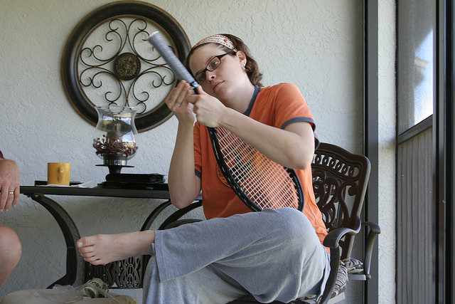

2026
2. ᠵᠠᠰᠠᠭ

ᠨᠢ᠄ 1 ᠬᠠᠷᠢᠶᠠᠴᠠᠢ
ᠡᠮᠬᠢ ᠵᠠᠮᠪᠠᠷᠠᠭᠠ ᠦᠭᠡᠢ ᠤᠴᠠᠷᠠᠯ ᠡᠷᠲᠡᠬᠡᠨ ᠬᠠᠭᠤᠳᠠᠰᠤ ᠪᠠᠨ ᠡᠷᠭᠢᠭᠦᠯᠦᠭᠡᠷᠡᠢ
ᠰᠡᠴᠡᠨ ᠮᠡᠷᠭᠡᠨ ᠲᠦᠰᠢᠮᠡᠯ ᠢᠨᠤ ᠤᠯᠤᠰ ᠤᠨ ᠡᠷᠳᠡᠨᠢ ᠰᠠᠢᠨ ᠡᠬᠡᠨᠡᠷ ᠬᠥᠮᠥᠨ ᠭᠡᠷ ᠦᠨ ᠡᠷᠳᠡᠨᠢ
ᠲᠡᠨᠡᠭ ᠬᠥᠮᠥᠨ ᠲᠡᠭ᠍ᠷᠢ ᠡᠴᠡ ᠠᠬᠠ ᠮᠤᠩᠬᠠᠭ ᠬᠥᠮᠥᠨ ᠮᠤᠨᠠ ᠠᠴᠠ ᠴᠢᠩᠭᠠ
ᠨᠢ ᠲᠥᠷᠥᠯ ᠬᠤᠪᠢᠶᠠᠪᠠᠯ᠄ ᠠᠶᠠᠯᠭᠠ ᠦᠭᠡ ᠥᠭᠦᠯᠡᠪᠦᠷᠢ᠃ ᠵᠢᠱᠢᠶᠡ᠄
ᠲᠦᠮᠡ ᠲᠠᠪᠤᠨ ᠭᠠᠷᠤᠢ ᠺᠦᠸᠠᠨᠳ᠋ ᠮᠸᠲᠷ ᠪᠠᠢᠳᠠᠭ᠃ ᠵᠢᠷᠤᠭ ᠲᠤ ᠭᠤᠤᠯᠳᠠᠭᠤ
ᠠᠭᠤᠢ ᠶᠢᠨ ᠲᠤᠬᠠᠢ ᠴᠢᠯᠦᠭᠡᠲᠡᠢ ᠪᠡᠷ ᠳᠠᠭᠠᠵᠤ ᠰᠡᠳᠬᠢᠭᠰᠡᠨ ᠵᠢᠭᠤᠯᠴᠢᠯᠠᠯ
ᠢ ᠵᠤᠭᠤᠭᠯᠠᠭᠰᠠᠨ ᠡᠨᠡ ᠨᠠᠰᠤᠲᠠᠨ ᠢ ᠷᠠᠰᠢᠨᠤᠳᠽᠠᠷ ᠭᠡᠳᠡᠭ᠂ ᠵᠠᠷᠤᠳ ᠬᠤᠰᠢᠭᠤᠨ ᠤ ᠪᠠᠶᠠᠷᠳᠤᠬᠤᠰᠢᠭᠤ
ᠡᠭᠦᠳᠦᠪᠡ᠃ ᠰᠦᠯᠵᠢᠶᠡᠨ ᠦ ᠨᠡᠢᠭᠡᠮ ᠳᠡᠬᠢ ᠬᠠᠮᠲᠤ ᠪᠠᠷ ᠪᠠᠢᠭᠤᠯᠵᠤ ᠬᠠᠮᠲᠤ ᠪᠠᠷ ᠡᠳ᠋ᠯᠡᠬᠦ
9. ᠮᠣᠩᠭᠣᠯ ᠬᠡᠯᠡᠨ ᠦ ᠬᠠᠨᠳᠤᠯᠭᠠ ᠦᠭᠡ ᠪᠠ ᠲᠠᠶᠢᠪᠤᠷᠢ ᠦᠭᠡ ᠨᠢ ᠶᠠᠮᠠᠷ ᠢᠯᠭᠠᠭᠠ ᠲᠠᠢ ᠪᠠᠶᠢᠳᠠᠭ ᠢ ᠵᠢᠱᠢᠶᠡ ᠲᠠᠢ ᠶᠠᠷᠢ᠃
ᠰᠠᠭᠤᠭᠠᠴᠢ ᠳ᠋ᠠ ᠂ ᠦᠨᠡᠨ ᠳᠦ ᠪᠡᠨ ᠭᠡᠷ ᠲᠦ ᠪᠡᠨ ᠣᠷᠣᠬᠤ ᠵᠠᠪ ᠦᠭᠡᠢ᠂ ᠣᠷᠣᠵᠤ ᠢᠷᠡᠬᠦ ᠪᠡᠷ
ᠲᠤᠰ ᠬᠡᠰᠡᠭ ᠲᠦ ᠢᠯᠡᠳᠬᠡᠬᠦ ᠬᠢᠭᠡᠳ ᠣᠢᠯᠠᠭᠠᠬᠤ ᠬᠣᠶᠠᠷ ᠲᠠᠯᠠ ᠶᠢᠨ ᠠᠭᠤᠯᠭᠠ ᠶᠢ ᠪᠠᠭᠲᠠᠭᠠᠨᠠ᠃
ᠦᠭᠡᠢ᠂ ᠬᠠᠷᠢᠨ ᠴᠤ ᠪᠦᠷ ᠰᠠᠨᠠᠭᠠ ᠠᠮᠠᠷᠠᠭᠰᠠᠨ ᠪᠠᠶᠢᠳᠠᠯ ᠲᠠᠢ ᠬᠦᠵᠦᠭᠦᠦ ᠪᠡᠨ ᠠᠳᠬᠤᠨ ᠰᠢᠯᠭᠡᠭᠡᠵᠦ
ᠦᠳᠡ ᠳᠤᠮᠳᠠ ᠵᠢᠨ ᠲᠡᠭ᠍ᠷᠢ ᠰᠢᠭ ᠦᠷᠡᠭᠡᠨ ᠪᠥᠭᠡᠳ ᠰᠠᠷᠠᠭᠤᠯᠬᠠᠨ ᠦᠨᠡᠨ ᠭᠣᠣᠯ ᠤᠨ ᠶᠠᠷᠢᠶᠠ ᠰᠢᠭ᠋ ᠥᠷᠥ ᠵᠢᠷᠦᠬᠡᠨ ᠳ᠋ᠤ ᠳᠣᠲᠣᠨᠣᠬᠠᠨ
ᠨᠢᠭᠡᠳᠦᠭᠡᠷ ᠬᠡᠰᠡᠭ ᠡᠨᠧᠷᠭᠢ ᠶᠢᠨ ᠰᠤᠷᠪᠤᠯᠵᠢ ᠶᠢᠨ ᠡᠬᠢ ᠪᠠᠶᠠᠯᠢᠭ ᠤᠨ ᠨᠡᠭᠡᠭᠡᠯᠲᠡ ᠮᠠᠨ ᠤ ᠤᠯᠤᠰ ᠤᠨ ᠱᠠᠨ ᠰᠢ ᠮᠤᠵᠢ ᠪᠠᠷ ᠵᠢᠱᠢᠶᠡᠯᠡᠬᠦ ᠨᠢ
ᠵᠢᠯᠤᠭᠤᠳᠴᠤ ᠪᠣᠯᠬᠤ ᠲᠡᠷᠭᠡ ᠶᠢᠨ ᠬᠡᠯᠪᠡᠷᠢ᠄ ᠨᠡᠷᠡᠲᠦ ᠲᠡᠮᠳᠡᠭᠲᠦ ᠲᠥᠷᠥᠯ ᠬᠡᠯᠪᠡᠷᠢ᠄ ᠵᠢᠯᠤᠭᠤᠴᠢ ᠶᠢᠨ ᠦᠨᠡᠮᠯᠡᠯ .
《 ᠲᠠᠳᠠᠳᠤᠩᠭᠠ 》 ᠬᠤᠨᠳᠠᠭᠠᠲᠤ ᠠᠩᠬᠠᠳᠤᠭᠠᠷ ᠬᠤᠭᠤᠴᠠᠭᠠᠨ ᠤ ᠮᠤᠩᠭᠤᠯ ᠪᠤᠯᠤᠳ ᠪᠢᠷ ᠦᠨ ᠪᠢᠴᠢᠯᠭᠡ ᠶᠢᠨ ᠤᠷᠤᠯᠳᠤᠭᠠᠨ
ᠮᠢᠬᠠᠨ ᠠᠴᠠ ᠱᠠᠯᠢᠲᠠᠢ ① ᠢᠳᠡᠵᠦ ᠴᠢᠳᠠᠭᠰᠠᠨ ᠦᠭᠡᠢ᠂ ᠬᠠᠷᠢᠨ ᠠᠭᠠᠷᠴᠠ ᠠᠴᠠ ᠣᠪᠣᠭᠠ ᠤᠤᠭᠤᠬᠤ
ᠦᠭᠦᠯᠡᠪᠦᠷᠢ ᠨᠢ᠄ 1 ᠮᠣᠷᠢ ᠪᠠᠷ ᠢᠷᠡᠭᠰᠡᠨ ᠨᠢ ᠳᠣᠷᠵᠢ ᠪᠠᠢᠵᠠᠢ ᠃ 2 ᠪᠤᠷᠤᠭᠤ ᠬᠡᠷᠡᠭ ᠬᠢᠬᠦ